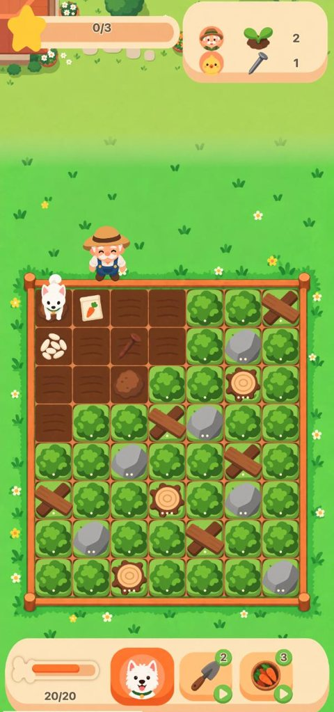

할아버지 텃밭 살리기
새로 · G3 대기Travel Town 머지 · 맥스가 파고·지키고·물어다 줌 · 맥스
흙더미를 탭하면 맥스가 씨앗·못·쌀을 파낸다. 같은 것끼리 합쳐 주문을 채우고, 합칠 때마다 옆 덤불·돌이 걷혀 버려진 밭이 한 칸씩 살아난다. 까마귀가 오면 탭해서 맥스가 짖게.
폰 세로7×8 · 56칸하루 = 별 3본편 톤
해 보기
판정 질문: 덮인 칸이 걷히는 게 다음 판을 또 하고 싶게 만드나.